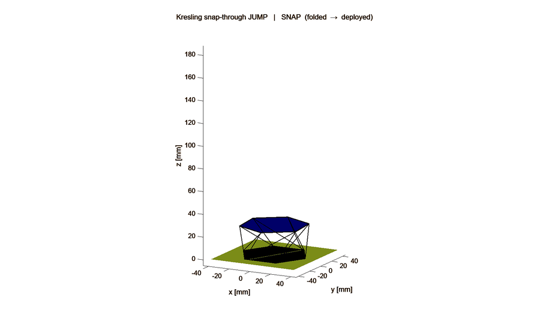
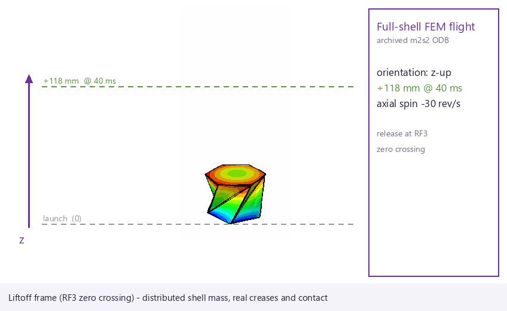

1. Design Input
Current platform uses a browser-side DeepONet surrogate trained on the calibrated reduced-model dataset. It does not run new Abaqus jobs yet.
Inverse Target
Optimization Config
Ready: 240 reduced-model designs loaded.
2. Reduced-Model Prediction
height
--
Hcom at 40 ms, mm
velocity
--
CoM velocity, m/s
spin
--
rad/ms


Open FEM GIF3. FEM Gate & Error
What is running nowForward prediction uses DeepONet in the browser; optimization samples the operator, not nearest-neighbor lookup.
Reduced model vs FEM anchorUse these as credibility bounds, not exact uncertainty for every design.
liftoff time error
±4.4%
t_lift, reduced vs FEM
top velocity error
±7%
v_top, mesh caveat applies
spin error
±8.2%
spin rate, fixture endpoint
Inverse candidates
Optimized candidates
Optimization uses the DeepONet reduced-model operator. FEM data is not used as a training label; it remains a gate for validation.